Time Tracker & Timesheet · 7 направлений дизайна
Одни и те же данные: пятница 16.10, 8h 10m, 4 неразобранных блока; неделя 42, 38h 20m. На каждый вариант: экран «Сегодня», неделя и трей; HTML-макеты 1280×800 на рабочем столе, скриншоты и концепты Nano Banana (gemini-3-pro-image).
Новые модели взаимодействия
E–G: другой способ работы, а не только другой стиль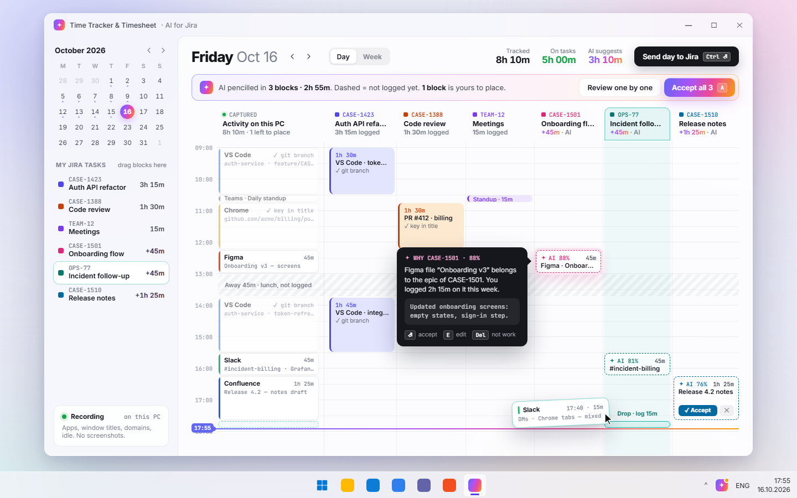
День как календарь: слева захваченная активность, колонки — задачи Jira. AI ставит пунктирные блоки, вы принимаете их или перетаскиваете свои.
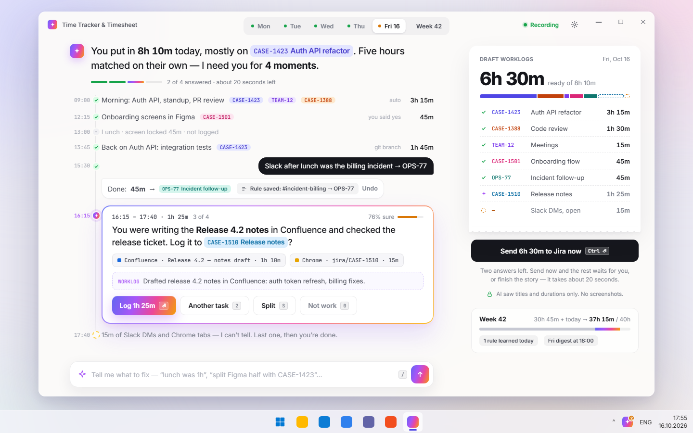
AI рассказывает день и спрашивает только о непонятном. Ответ кнопкой или фразой: «Slack после обеда — это OPS-77».
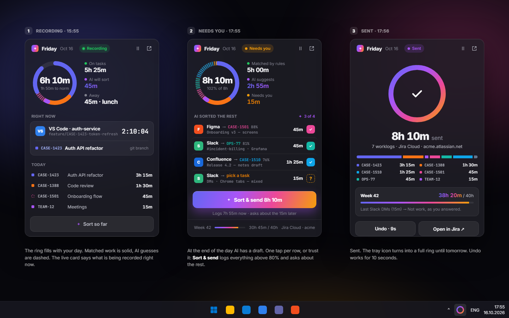
Всё приложение — флайаут 380×560 над треем: кольцо дня, живая карточка, «Sort & send». Окно нужно для пятницы и настроек.
Визуальные стили
A–D: одна модель «дашборд + список»
Стиль промо-видео, доведённый до приложения: стекло, пастель, KPI, лента дня, AI-панель.

Родной Windows 11: Mica, Segoe UI Variable, NavigationView, неделя как таблица Tempo.

Тёмный, клавиатурный: очередь разбора по одному, тепловая карта недели, палитра в трее.

Одно кольцо, одно предложение, одна кнопка. Детали выдвигаются снизу.
| Критерий (1–5) | A · Aurora | B · Fluent | C · Midnight | D · One Button | E · Calendarnew | F · Day Storynew | G · Tray-firstnew |
|---|---|---|---|---|---|---|---|
| Вау-эффект | ●●●●● | ●●●●● | ●●●●● | ●●●●● | ●●●●● | ●●●●● | ●●●●● |
| Понятно с первого взгляда | ●●●●● | ●●●●● | ●●●●● | ●●●●● | ●●●●● | ●●●●● | ●●●●● |
| Скорость пятничного разбора | ●●●●● | ●●●●● | ●●●●● | ●●●●● | ●●●●● | ●●●●● | ●●●●● |
| Скриншоты Store и промо-видео | ●●●●● | ●●●●● | ●●●●● | ●●●●● | ●●●●● | ●●●●● | ●●●●● |
| Дёшево сделать на WinUI 3 | ●●●●● | ●●●●● | ●●●●● | ●●●●● | ●●●●● | ●●●●● | ●●●●● |
| Доступность и тёмная тема | ●●●●● | ●●●●● | ●●●●● | ●●●●● | ●●●●● | ●●●●● | ●●●●● |
| Сумма | 20 / 30 | 21 / 30 | 21 / 30 | 23 / 30 | 20 / 30 | 25 / 30 | 26 / 30 |
| Объём | M–L · ~2–3 нед. | S–M · ~1 нед. | L · ~3 нед. | M · ~1.5–2 нед. | L · ~3–4 нед. | M–L · ~2–3 нед. + разбор команд LLM | M · ~2 нед. + небольшое окно |
| Место в итоге | 3 | 7 | 4 | 6 | 5 | 2 | 1 |
Оценки A–D пересчитаны под новый набор критериев. «Скорость пятничного разбора» — сколько действий нужно, чтобы проверить день и неделю и отправить. «Дёшево сделать»: 5 — почти всё на стандартных контролах. Место в итоге учитывает не только сумму, но и то, насколько вариант подходит пассивному трекеру (см. рекомендацию).
Точная, но доработанная версия стиля из ролика. Светлые полупрозрачные карточки на пастельном «aurora»-фоне, Inter и JetBrains Mono, индиго #4f46e5, AI-градиент. «Сегодня»: пять KPI-плиток (с кольцом нормы), лента Activity/Work с маркером «сейчас», живая лента захвата с источником совпадения (git branch, key in title), справа AI-панель: «осталось разобрать 3h 10m», что именно уйдёт в AI, кнопка «Sort my day». Неделя: полоски дней по задачам, строки с галочками auto/AI %, одна жёлтая строка «Pick one», donut, «92% без правок», нижняя панель «Confirm 38h 20m → Jira». Трей: стеклянный флайаут с мини-полосой дня и тостом «норма набрана».


Плюсы
- Продукт выглядит так же, как в ролике и на скриншотах Store: ожидание совпадает с тем, что человек увидит.
- Главная AI-кнопка видна сразу, градиент становится узнаваемым знаком бренда.
- Весь день на одном экране: цифры, лента и откуда взялось каждое совпадение.
- Неделя с галочками и процентами уверенности даёт доверие к AI.
Минусы
- Экран плотный: 5 плиток, лента, фид и панель. Новичку больше читать.
- Пастельный фон выглядит «не по-виндовому»; тёмную тему придётся рисовать отдельно.
- Стекло и градиенты на слабых ПК и в режиме экономии батареи становятся плоскими (Acrylic отключается).
WinUI 3: что нативно, что рисовать M–L
- Нативно
- MicaAlt/DesktopAcrylic в окне; карточки — Border с полупрозрачной заливкой + ThemeShadow; LinearGradientBrush для кнопки, рамки AI-панели и прогресс-бара; InfoBadge на пункте «Week»; ToggleSwitch/Button в трее.
- Свой код
- Rail с подписью под иконкой (свой шаблон NavigationView или ListView); лента Activity/Work — развитие текущего DayStrip (Canvas); donut — Path + ArcSegment; градиентный текст «38h 20m» — Composition (CompositionMaskBrush) или Win2D; пастельный фон внутри окна — CompositionRadialGradientBrush поверх Acrylic; штриховка — уже есть HatchFill.
- Трей
- H.NotifyIcon + своё безрамочное окно-флайаут с DesktopAcrylic у края экрана; тост — AppNotificationBuilder (Windows App SDK).
- Шрифты
- Inter и JetBrains Mono вшить в пакет (OFL).
Только системный язык Windows 11: Mica, Segoe UI Variable, Segoe Fluent Icons, системный акцент #005FB8, скругление 8 px, почти без декора. Слева развёрнутый NavigationView с карточкой «неделя 30h 45m / 40h». «Сегодня»: заголовок дня и CommandBar с одной акцентной кнопкой «Sort with AI», полоса дня с нормой, InfoBar «4 блока не разобраны», две группы: «На задачах» (галочка, ключ, текст ворклога, источник, длительность) и «Не разобрано» (ComboBox «Pick a task…» и «Not work» прямо в строке). Неделя: таблица задача × день, как в Tempo; источник Rule / Calendar / AI %; InfoBar с одним вопросом. Трей: флайаут в стиле Quick Settings и обычное контекстное меню.


Плюсы
- Самый дешёвый вариант: почти всё на стандартных контролах. Тёмная тема, высокий контраст и экранный диктор работают сами.
- Ближе всего к текущему DayView (группы, Mica, DayStrip), переписывать почти нечего.
- Табель недели сразу понятен менеджерам и бухгалтерии.
- Вызывает доверие у корпоративных пользователей, в Store выглядит родным приложением.
Минусы
- Мало вау-эффекта: AI здесь просто синяя кнопка, магии не чувствуется.
- Похож на сотню других утилит, отличаться придётся словами, а не видом.
- Расходится с роликом и скриншотами Store, их пришлось бы переснять.
WinUI 3: что нативно, что рисовать S–M
- Нативно
- MicaBackdrop (уже есть), NavigationView Left, CommandBar, InfoBar, ComboBox/AutoSuggestBox, CheckBox, ItemsRepeater/ListView, ProgressBar, MenuFlyout для трея, TitleBar с поиском (WinAppSDK 1.6+ TitleBar), все цвета — ThemeResource (AccentFillColorDefaultBrush, CardBackgroundFillColorDefaultBrush).
- Свой код
- Только полоса дня (есть DayStrip) и таблица недели (Grid/ItemsRepeater; DataGrid из Toolkit не нужен). Штриховка — существующий HatchFill.
- Трей
- H.NotifyIcon: контекстное меню нативно; флайаут — маленькое окно с DesktopAcrylic.
Тёмное стекло, тонкие линии, неоновые цвета задач и AI-градиент только там, где решает AI. Главная идея — не экран, а очередь: «Review queue · 4 left». Сверху лента дня (SCREEN / WORK), предложения AI показаны пунктиром. В центре одна карточка: что было на экране, ответ AI с уверенностью, объяснение «почему», черновик ворклога, альтернативы на цифрах 2/3/0, действия Enter / E / S / R. Справа «Accept all ≥ 80%». Неделя: тепловая карта задача × день, огромное «38h 20m», три инсайта, один вопрос прямо в нижней панели, Ctrl+Enter отправляет. Трей: командная палитра вместо меню.


Плюсы
- Самый быстрый разбор: день проверяется за минуту с клавиатуры. Это «Вариант В» из исследования UX.
- «Accept all ≥ 80%» и «Remember as rule» прямо работают на метрику «70% без правки».
- Видно, почему AI так решил, это даёт доверие.
- Очень премиально для разработчиков, а именно они основные пользователи Jira.
Минусы
- Задуман тёмным; светлую тему придётся проектировать отдельно.
- Неон и свечение могут показаться игрушечными менеджерам и бухгалтерии.
- К клавиатурной модели нужно привыкнуть, без подсказок её не найдут.
- Больше всего собственных стилей.
WinUI 3: что нативно, что рисовать L
- Нативно
- RequestedTheme=Dark + MicaAlt/Acrylic; KeyboardAccelerators и KeyTipPlacement для подсказок; AutoSuggestBox для Ctrl+K; градиентная рамка карточки — Border с LinearGradientBrush в BorderBrush; ItemsRepeater + UniformGridLayout для тепловой карты.
- Свой код
- Свечение (Composition DropShadow с цветом или AttachedCardShadow из CommunityToolkit); стопка «следующих» карточек и анимации перехода (Composition implicit animations); цвета ячеек тепловой карты считаются в коде; моноширинный шрифт и kbd-чипы — свой стиль.
- Трей
- Палитра — безрамочное окно (OverlappedPresenter без рамки, DesktopAcrylic), глобальная горячая клавиша через RegisterHotKey.
Ультра-простой и тёплый. Бумажный off-white фон, Plus Jakarta Sans, без боковой навигации: переключатель Today / Week и шестерёнка. «Сегодня»: большое кольцо нормы, где цвета — задачи, а точки — неразобранное; одна фраза человеческим языком («Mostly Auth API refactor and Code review. 3h 10m still need a task») и одна чёрная кнопка «Sort my day» с радужным свечением. Детали (полоса дня) в выдвижной шторке снизу. Неделя: пять маленьких колец дней, общая полоса, задачи карточками-предложениями, один вопрос в виде трёх кнопок, одна кнопка «Send 38h 20m to Jira». Трей: то же кольцо и та же кнопка, иконка трея тоже маленькое кольцо.


Плюсы
- Самый понятный: одно число, одно кольцо, одна кнопка, учить нечего.
- Хорош для первого запуска и для тех, кто не разработчик.
- Неделя читается как короткий отчёт, а не таблица.
- Одна метафора везде: кольцо в окне, во флайауте и в иконке трея.
Минусы
- Детали спрятаны, опытным нужна полоса или таблица (шторка Details это частично решает).
- Каждое редкое действие на клик дальше.
- Кольцо нормы странно выглядит при неполном дне или неполной занятости.
- На скриншотах Store меньше видно, что внутри.
WinUI 3: что нативно, что рисовать M
- Нативно
- SelectorBar (WinAppSDK 1.5+) для Today/Week; Button со своим стилем; Mica можно оставить под бумажной заливкой; карточки — Border; вопрос недели — RadioButtons/ToggleButton.
- Свой код
- Кольцо с сегментами и точками — Path/ArcSegment + ItemsControl точек (или Win2D, его пока нет в проекте); радужное свечение под кнопкой — Composition DropShadow или размытый градиент; выдвижная шторка Details — свой контрол с анимацией TranslateTransform; иконка трея с кольцом генерируется в коде (по прогрессу).
- Шрифт
- Plus Jakarta Sans (OFL) вшить в пакет.
День — вертикальный календарь 9:00–18:00. Первая колонка — то, что записалось на этом ПК: приложение, заголовок окна, источник совпадения. Остальные колонки — задачи Jira, у каждой сумма за день. Сплошные блоки уже залогированы (git branch, ключ в заголовке, календарь). Пунктирные — предложения AI с процентом, кнопкой «Accept» и подсказкой «почему». Неразобранный блок перетаскивают мышью на задачу, колонка подсвечивается. Сверху одна полоса: «AI pencilled in 3 blocks · Accept all 3». Неделя — обычная календарная сетка Пн–Пт с прогрессом нормы по дням и одним оставшимся вопросом. Трей: тот же календарь в миниатюре и уведомление «Accept all».
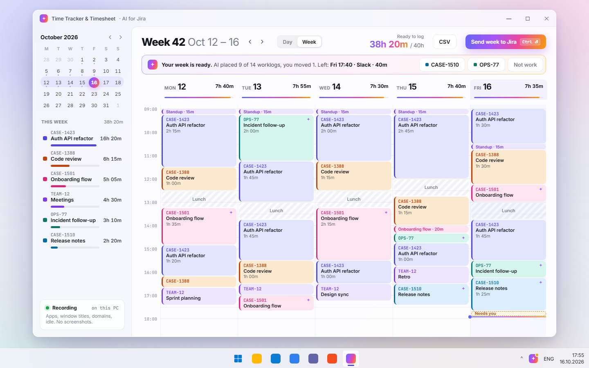
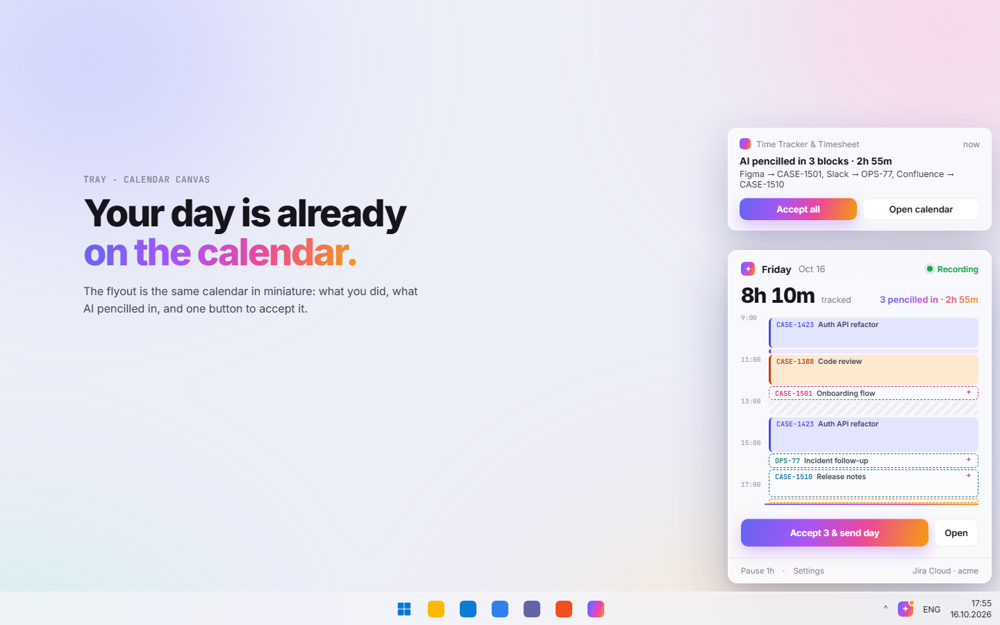
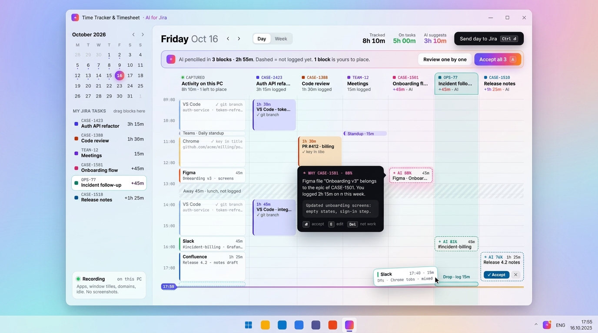
Плюсы
- Календарь умеют читать все: видно и «что», и «когда».
- Пунктир «AI предлагает» очень нагляден и хорошо смотрится в ролике: блоки «встают» на место.
- Удобнее всех для правок: сдвинуть, разрезать, перетащить на другую задачу.
- Хорош для скриншота Store: сразу видно, что делает продукт.
Минусы
- Перетаскивание — самый медленный способ разбора; быстрым его делает только «Accept all».
- Больше 6–7 колонок задач не помещается, нужен скролл или группировка.
- Блоки по 15 минут почти нечитаемы.
- Больше всего своего кода; для клавиатуры и экранного диктора нужен отдельный путь (список).
WinUI 3: что нативно, что рисовать L
- Нативно
- CalendarView в боковой панели, SelectorBar Day/Week, ScrollViewer, TeachingTip для «почему», drag-and-drop через CanDrag/AllowDrop, AppNotification с кнопками.
- Свой код
- Вся сетка дня: свой Panel (MeasureOverride/ArrangeOverride), раскладывающий блоки по времени и колонкам; пунктирные рамки (StrokeDashArray); ресайз блока за край; линия «сейчас»; неделя — тот же Panel на 5 колонок. Дублирующий список и AutomationPeer для Narrator и клавиатуры.
- Трей
- H.NotifyIcon (уже в проекте) + безрамочное окно-флайаут.
AI пересказывает день одной фразой («8h 10m, mostly CASE-1423. Five hours matched on their own — I need you for 4 moments») и идёт по хронологии. Принятые главы сворачиваются в строку с галочкой, обед помечен «не логируется». Вопрос — одна большая карточка: что было на экране, к какой задаче AI это относит и с какой уверенностью, черновик ворклога, кнопки «Log 1h 25m / Another task / Split / Not work» (Enter / 2 / S / 0). Исправить можно фразой: «Slack after lunch was the billing incident → OPS-77». AI отвечает «Done» и сохраняет правило (с Undo). Справа «чек» черновиков ворклогов растёт по мере ответов; отправить можно в любой момент. Неделя — дайджест: абзац про неделю, пять карточек дней, один вопрос, три цифры и «Looks right — send 38h 20m». Трей: Windows-уведомление с кнопками и полем ответа.
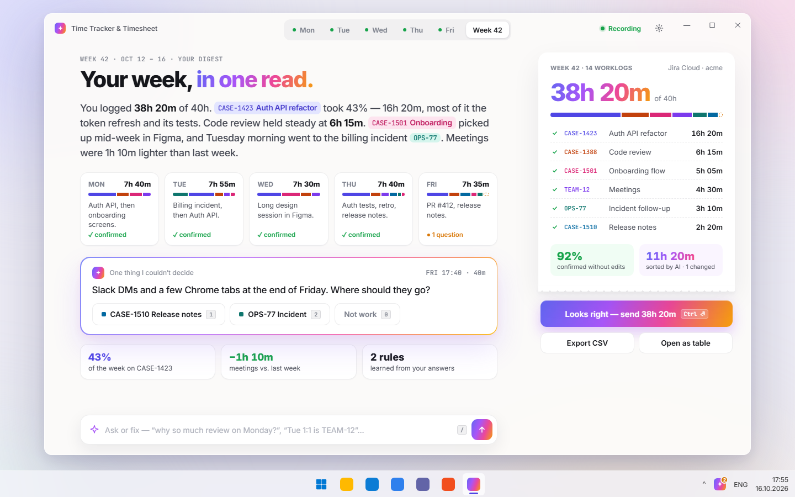
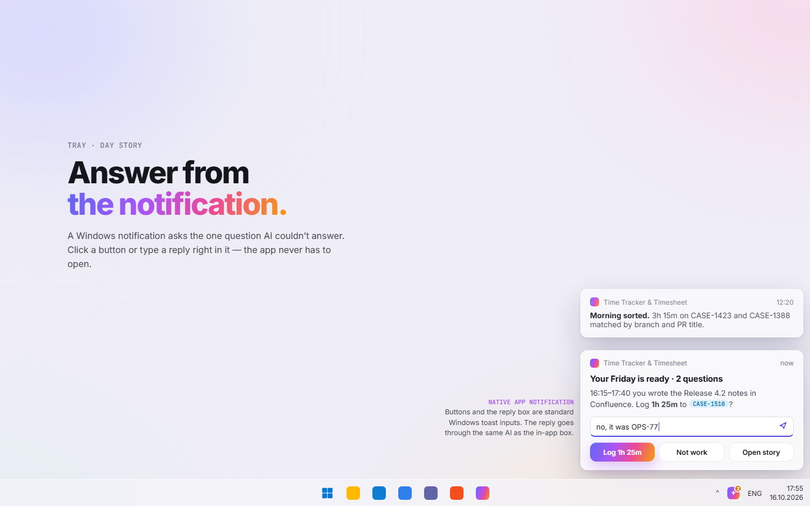
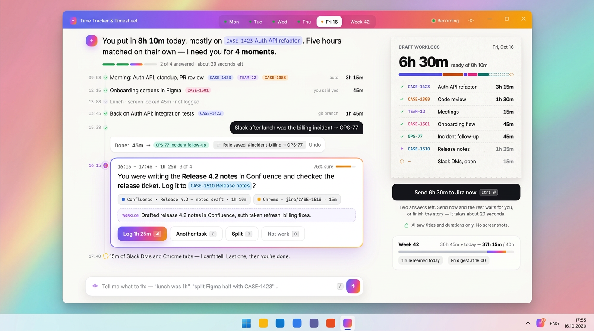
Плюсы
- Самый понятный для новичка и не-разработчика: читаешь и отвечаешь, интерфейса почти нет.
- AI выглядит помощником, а не кнопкой. Лучшая история для Store и ролика.
- Правка фразой закрывает редкие случаи («обед был час», «раздели Figma пополам»), для которых иначе нужны отдельные экраны.
- Текст и кнопки — лучший вариант для экранного диктора; тёмная тема без проблем.
- Уведомление с полем ответа — стандартная возможность Windows: можно вообще не открывать приложение.
Минусы
- Прозу читать медленнее, чем пробежать таблицу; опытным нужна кнопка «Open as table».
- Правке фразой нужен надёжный разбор команд и Undo; каждая ошибка бьёт по доверию.
- Механика вопросов похожа на C. Отличие — контекст всего дня и правки текстом.
- Тексты AI нужно держать короткими и локализовать.
WinUI 3: что нативно, что рисовать M–L
- Нативно
- ItemsRepeater с DataTemplateSelector (глава / сообщение / вопрос), RichTextBlock с InlineUIContainer для чипов задач, TextBox для команд, KeyboardAccelerators, SelectorBar для дней. Уведомление: AppNotificationBuilder с кнопками и AddTextBox.
- Свой код
- Градиентная рамка карточки (Border + LinearGradientBrush), «чек» с зубчатым краем (Path), анимация сворачивания главы. Главная работа не в UI: фраза → действие (move / split / not work / rule), подтверждение и Undo.
- Трей
- Уведомления вместо флайаута; меню H.NotifyIcon остаётся.
Приложение пассивное, поэтому главный экран — флайаут 380×560 над треем, а не окно. Иконка в трее — кольцо дня: оно заполняется и получает оранжевую точку, когда нужен ответ. Три состояния флайаута. Recording: кольцо (сплошное — сопоставлено, пунктир — догадка AI), живая карточка «VS Code · feature/CASE-1423 → CASE-1423, 2:10:04», задачи дня. Needs you: список AI «Figma → CASE-1501 88%» с переключателями и одна кнопка «Sort & send 8h 10m» — она отправляет уверенное и спрашивает об остальном. Sent: полное градиентное кольцо, разбивка по задачам, неделя 38h 20m / 40h, Undo 10 секунд. В пятницу флайаут показывает неделю: кольца дней и «Send week». Небольшое окно — табель недели, правила, настройки. Сцены показаны в светлой и тёмной теме.
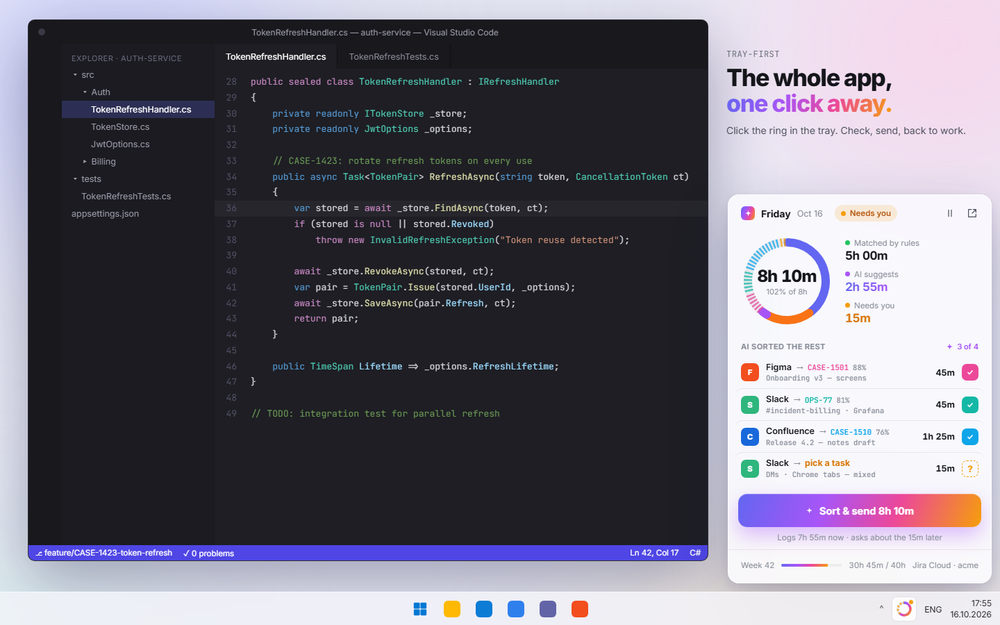
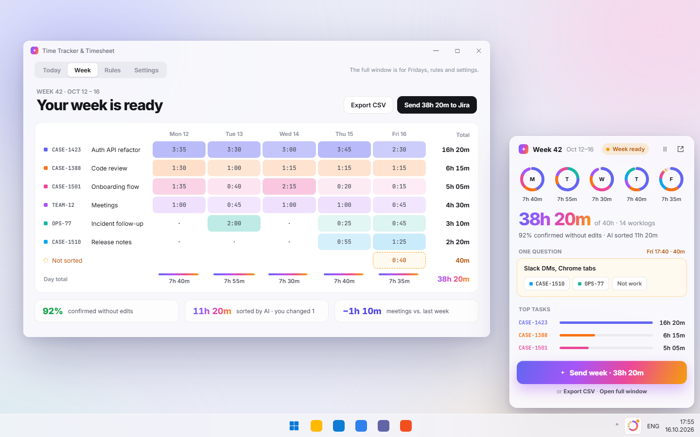
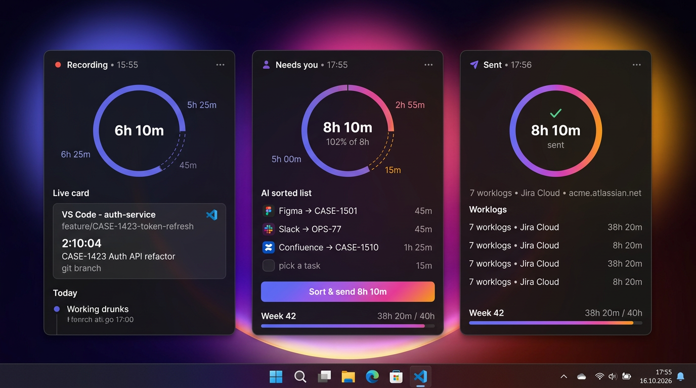
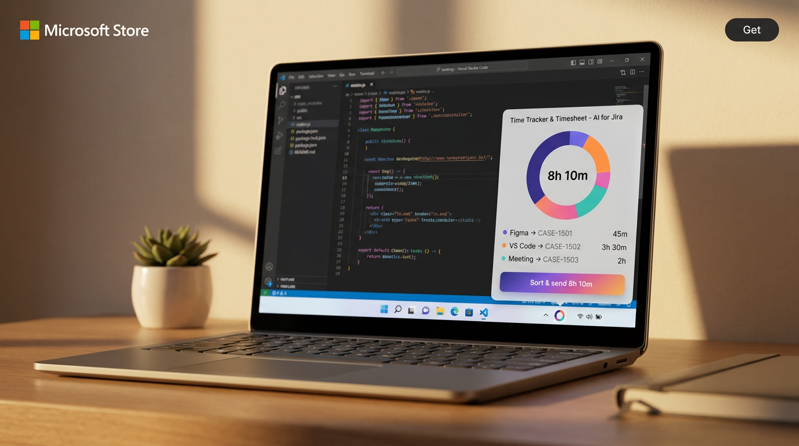
Плюсы
- Соответствует природе продукта: он записывает сам, и в большинство дней окно не нужно.
- Самый короткий путь: клик по кольцу → «Sort & send» → обратно к работе.
- Кольцо в трее видно весь день: сколько набрано и нужен ли ответ.
- Сильный кадр для Store и ролика: «the whole app, one click away».
- Маленькая поверхность: проще сделать красиво и в светлой, и в тёмной теме, проще с доступностью.
Минусы
- В 380 px помещается только «принять / выбрать задачу». Для сложных правок нужно окно.
- Окно всё равно придётся рисовать (неделя, правила, настройки): G не заменяет A/B/C/F, а дополняет их.
- Флайауты у трея в Windows капризны: позиция, несколько мониторов, автоскрытие панели задач.
- Кто не смотрит в трей, может потерять приложение: нужен онбординг «закрепите иконку».
WinUI 3: что нативно, что рисовать M
- Нативно
- H.NotifyIcon.WinUI уже в проекте (TrayHost с MenuFlyout): левый клик открывает флайаут, правый — прежнее меню. Окно без рамки: AppWindow + OverlappedPresenter без заголовка, DesktopAcrylicBackdrop. ToggleButton/CheckBox в списке, AppNotification для «Needs you».
- Свой код
- Позиция у трея (Shell_NotifyIconGetRect, рабочая область монитора), скрытие при потере фокуса; кольцо — Path + ArcSegment с StrokeDashArray; иконка трея с кольцом генерируется в коде по прогрессу; анимация появления снизу.
- Окно
- Небольшое: табель недели на Grid/ItemsRepeater и SelectorBar Today/Week/Rules/Settings, близко к B.
Итог и рекомендация
Честный рейтинг. Сумма баллов в таблице — ориентир. Место учитывает ещё и то, насколько вариант подходит пассивному трекеру.
- G · Tray-first — 26/30. Лучше всех подходит продукту: он записывает сам, а от человека нужно 10 секунд в день. Но это оболочка, а не весь продукт: окно всё равно нужно.
- F · Day Story — 25/30. Самый понятный и доступный, лучше всех «продаёт» AI. Риск — правки фразой: без надёжного разбора команд и Undo их не выпускать.
- A · Aurora Glass — 20/30. Совпадает с роликом и Store. Но экран плотный, а модель «дашборд» обычная.
- C · Midnight Focus — 21/30. Механика «по одному, Enter / 2 / 0» — самая быстрая для разработчиков. Ниже A из-за темы «только тёмная» и того, что клавиатуре надо учиться.
- E · Calendar Canvas — 20/30. Самый наглядный для правок и эффектный в ролике, но самый дорогой, а перетаскивание — медленный путь. Это режим редактирования, а не главный экран.
- D · One Button — 23/30. Понятный и недорогой, но прячет детали, а кольцо на неполном дне выглядит странно. Его лучшие идеи (кольцо, одна кнопка) уже вошли в G.
- B · Calm Fluent — 21/30. Самый дешёвый и доступный, но без вау-эффекта. Это техническая основа, а не направление.
Рекомендация — гибрид «G снаружи, F внутри, A по стилю»:
- G — основной ежедневный интерфейс: кольцо в трее, флайаут Recording / Needs you / Sent, «Sort & send»; в пятницу — флайаут недели.
- F — экран разбора в окне: пересказ дня, карточка-вопрос с клавишами из C (Enter / 2 / S / 0, «Accept all ≥ 80%»), чек ворклогов справа. Правки фразой — вторым этапом, после кнопок.
- A — визуальный язык окна и Store (стекло, пастель, градиент только на AI), чтобы совпадать с роликом. Тёмная тема — по образцу тёмного флайаута G.
- E — позже, как вкладка «Calendar» для ручных правок (сдвинуть, разрезать, перетащить). В первый релиз не брать.
- B — техническая база: стандартные контролы и ThemeResource под стеклом, чтобы контраст, Narrator и тёмная тема работали сами.
Что проверить первым и дешевле всего: заменить меню трея (TrayHost) на флайаут G в состоянии «Needs you». Это примерно неделя работы, и сразу появляется кадр для Store.
Концепты Nano Banana — настроение, а не спецификация: модель местами искажает мелкий текст (CASE-2423, «Inzident» на e-1; «Working drunks» и повторяющиеся строки на g-1). Источник правды — HTML-макеты.